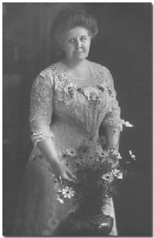

 |
||
|
Lilly
Woodbury Reid,
1860 - 1939
|
||
| February 26, 1859 | Born in Sutton, Massachusetts. Her father, William A. Reid (1833-1909) was born in New York and her mother, Sarah Elizabeth Woodbury (1837-1900), in Massachusetts. Source: 1870 United States Federal Census. | |
| 1865 | The Massachusetts State Census lists Simon J Woodbury, (60), Sabrina D Woodbury. (61), Prescott J Woodbury (33), and Lizzie W. (5), living in Sutton, Worcester, Massachusetts. Source: Massachusetts, State Census, 1865, index and images, FamilySearch.org. | |
| July 16, 1870 | The US Federal Census lists William A. Reid (37), Lizzie S. (32), Lizzie W. (10), and Jennie M. (9), living in Chicago, Illinois. Source: 1870; Census Place: Chicago Ward 4, Cook, Illinois; Roll: M593_200; Page: 114; Image: 229. | |
| June 19, 1880 | The US Federal Census lists William Reed (45), Elizabeth (43), Lilly (21), Jennie (19), Fannie (1), Simon J. Woodbury (father-in-law 70), and C. C. Edwards (visitor 34), living in Chicago, Cook, Illinois. Source: 1880; Census, Roll: T9_187; Family History Film: 1254187; Page: 297.1000; Enumeration District: 30; Image: 0015. | |
| June 28, 1882 | Married her first husband, Harry S. Moseman in Chicago, Cook, Illinois. Source: Cook County, Illinois, U.S., Marriages Index, 1871-1920. | |
| 1891 | She and her parents were listed in the Chicago Blue Book as living at 3557 Prairie Avenue, as Mrs. Lillie R. Moseman along with Mr. & Mrs. William A. Reid. Source: The Chicago blue book of selected names of Chicago and suburban, Page 148. |
 Home of Lillie R. Reid
Home of Lillie R. Reid3557 Prairie Avenue |
| During the late nineteenth century, Prairie Avenue and the surrounding neighborhood developed into one of Chicago’s most prominent residential districts, home to many of the city’s leading business and social figures. The residences from this area have since been demolished. | ||
| Lillie’s business card identified her as Mrs. L. R. Moseman and gave her address as 3557 Prairie Avenue. Source: Mrs. L. R. Moseman Business Card. |
 Mrs. L. R. Moseman
Mrs. L. R. Moseman3557 Prairie Avenue |
|
| November 4, 1891 | Married Emil Kellogg Boisot in Chicago, Illinois. |  Emile Kellogg Boisot
Emile Kellogg Boisot1859 - 1941 |
| August 21, 1892 | There first son, Louis Marston Boisot was born. He is the grandfather of Debora Boisot. | |
| August 28, 1897 | Marion Boisot was born in LaGrange, Illinois. | |
| November 30, 1899 | Elizabeth Boisot was born. | |
| June 16, 1900 | The US Federal Census lists Emile K Boisot (40), Lily R. (39), Louis M. (7), Marion (2), Elizabeth (5 mo.), Elizabeth Reid (63), two servants Fannie Bell (55) and Maud Tansey (31), living in 6-WD Chicago, Cook, Illinois. Source: 1900; Census Place: Lyons, Cook, Illinois; Roll: T623 293; Page: 40B; Enumeration District: 1169. | |
| April 18, 1910 | The 1910 US Federal Census lists Emile K Boisot (51), Lily R. (50), Louis M. (17), and Marion (12), living in 6-WD Chicago, Cook, Illinois. Source: 1910 United States Federal Census. | |
| 1919 | Emil and Lillie visited Big Tree's in California. Source: Picture sent by grandson Emile K. Boisot. |  Emil and Lillie 1919 |
| 1920 | There names are not listed in the 1920 US Federal Census. Her brother-in-law, Louise Boisot is listed as age 60, wife Mary, and daughter Pauline living in Lyons, Cook, Illinois. Source: 1920 US Census. | |
| 1924 | Moved to a large home at 585 Belle Fontaine Street in Pasadena, California. They had a cook, maid, and chauffeur. | |
| April 11, 1930 | The 1930 US Federal Census lists Emile K. Bosiot (71), Lizzie (70), and two servents living in Pasadena, Los Angeles, California. Source: 1930 United States Federal Census. | |
| During the summer months, they lived in a cottage on the grounds of the Hotel Del Monte. | Del Monte Hotel Cottage, Monterey, California. |
|
| Emile and Lillie had a summer home in Carmel Valley, California, which is where their daughter Marion and her husband lived. | ||
| July 4, 1936 | Lillie and her son Emile sailed from the Los Angeles harbor to Honolulu, Hawaii. It took about 5 days to sail to Hawaii. Source: List or Manifest of in-bound passengers (citizens) for Imigration Officials at port of arrival. | |
| August 27, 1939 | Lillie died in Carmel, California following a long illness. Funeral services were held at the Wee Curch of the Heather, Forest Lawn, Glendale, California. Source: San Francisco Chronicle (San Francisco, CA), Page: 11. | |
| February 1, 1941 | Her husband, Emil K. Boisot, died in Pasadena, California. He was 81 years old. |

Last updated: August 8, 2026